Examples¶
The example data files can be downloaded from the github project page
DNS case¶
This velocity field is from a DNS simulation of an Homogeneous Isotropic Turbulence (HIT) case.
Using default input file example_dataHIT.nc, default scheme least square filter and default detection swirling strength we test here two cases:
Case 1: threshold on swirling strength = 0.0
Case 2: threshold on swirling strength = 0.1
Case 3: threshold on swirling strength = 0.2
Case 4: threshold on swirling strength = 0.4
If you set self.normalization_flag = True on the classes.py module, the value of swirling strength will be normalized. The values of the threshold must be set to avoid unnecessary noise.
Case 1¶
$ vortexfitting -t 0.0 -i data/example_dataHIT.nc
{kind=link}
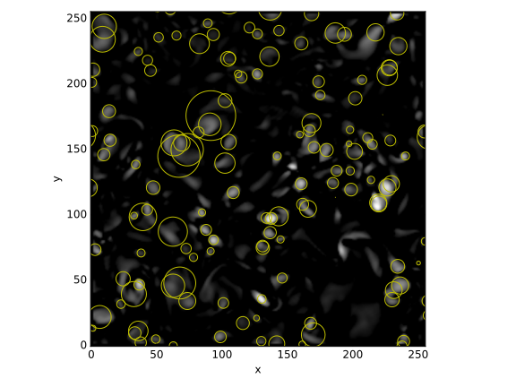
361 vortices detected with 84 accepted.
Case 2¶
$ vortexfitting -t 0.1 -i data/example_dataHIT.nc
{kind=link}
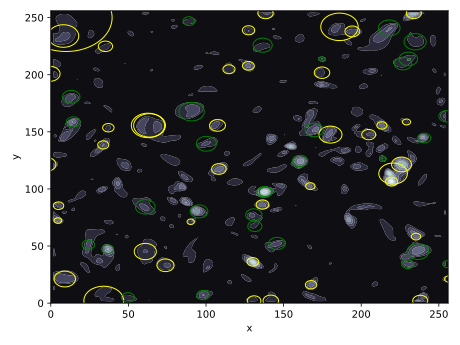
162 vortices detected with 72 accepted.
Case 3¶
$ vortexfitting -t 0.2 -i data/example_dataHIT.nc
{kind=link}
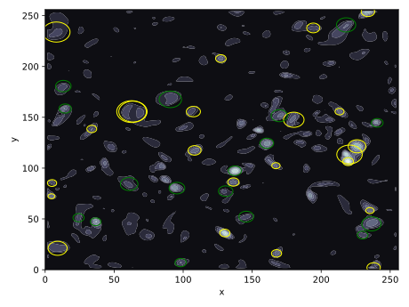
58 vortices detected with 40 accepted.
Case 4¶
$ vortexfitting -t 0.4 -i data/example_dataHIT.nc
{kind=link}
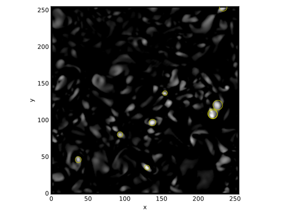
9 vortices detected with 8 accepted.
Below two vortices are displayed, where in the left we have the normal field and to the right we have the advection velocity subtracted.
{kind=link}
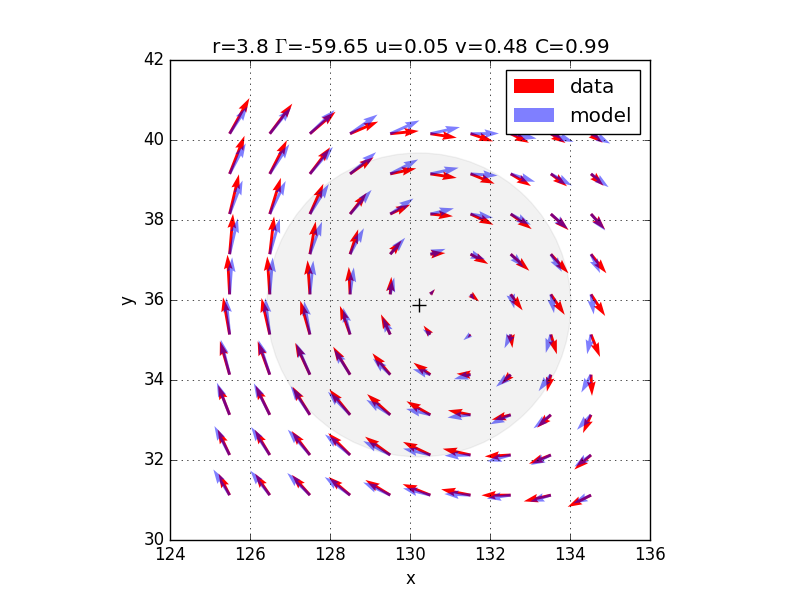
{kind=link}
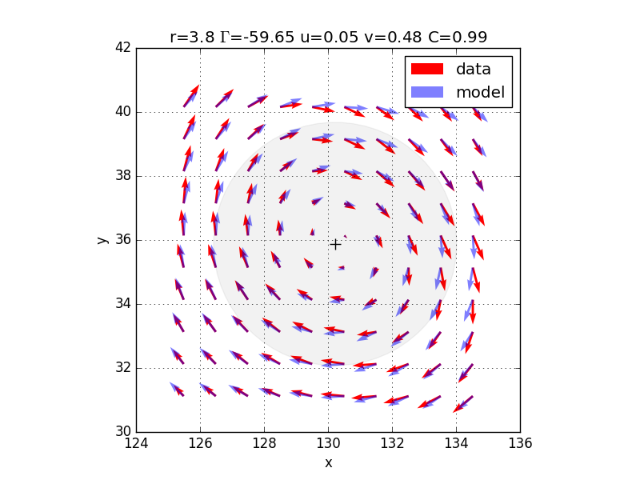
{kind=link}
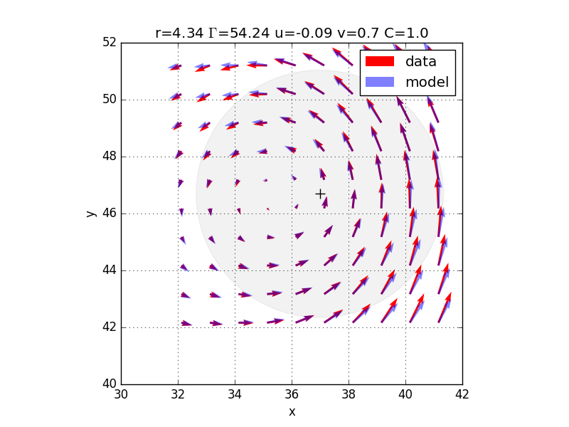
{kind=link}
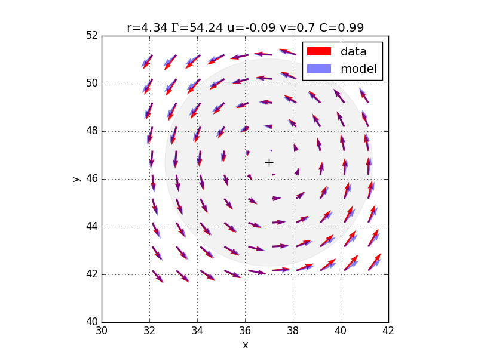
Case |
Threshold |
Detected |
Accepted |
|---|---|---|---|
1 |
0.0 |
361 |
84 |
2 |
0.1 |
162 |
72 |
3 |
0.2 |
58 |
40 |
4 |
0.4 |
9 |
8 |
PIV case - NetCDF file¶
For PIV data we need to update the format, to match NetCDF file.
It is done with the -ft piv_netcdf (file type) argument.
Here, since we have an advection velocity, we have to set self.normalization_flag = True and self.normalization_direction = ‘y’. This is done directly in the classes.py module.
The -rmax argument leaves the software calculate the initial radius.
$ vortexfitting -i data/example_dataPIV.nc -ft piv_netcdf -t 1.5 -rmax 0
{kind=link}
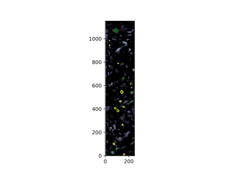
203 vortices detected with 24 accepted.
Below two vortices are displayed, where in the left we have the normal field and to the right we have the advection velocity subtracted.
{kind=link}
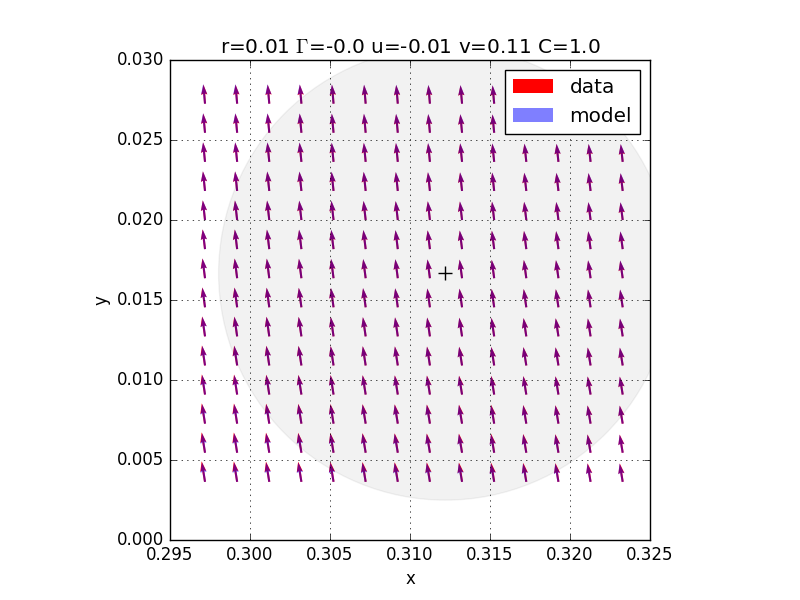
{kind=link}
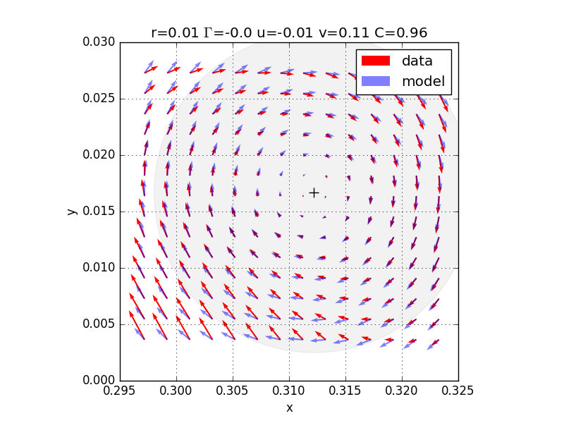
{kind=link}
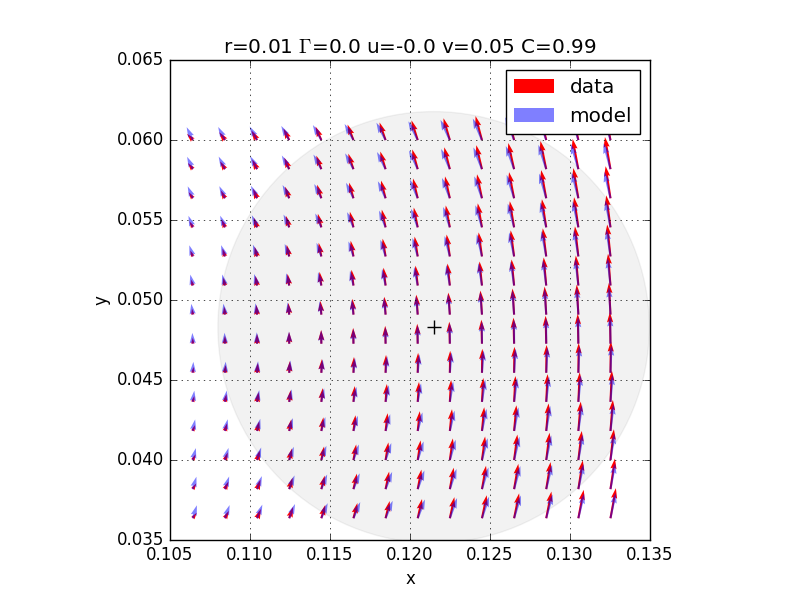
{kind=link}
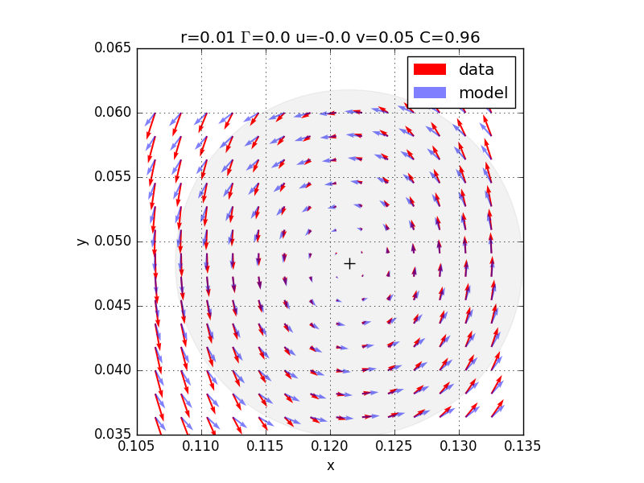
PIV case - Tecplot file¶
For PIV data with Tecplot, we need to update the format, to match Tecplot file.
It is done with the -ft piv_tecplot (file type) argument.
$ vortexfitting.py data/adim_vel_{:06d}.dat -first 10 -t 5 -b 10 -ft piv_tecplot
{kind=link}
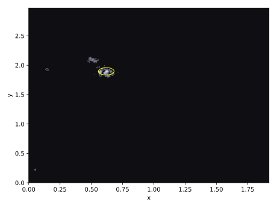
An average field can be subtracted, using -mf argument (mean file)
If you want to analyze a set of images, use arguments -first, -last and -step.
(please modify data input to format the image number: dim_vel_{:06d}.dat with -first 10 is formatted as dim_vel_000010.dat).
$ vortexfitting.py -i data/dim_vel_{:06d}.dat -mf data/mean.dat -t 50 -first 10 -ft piv_tecplot
As presented in the image, one main vortex is found in the velocity field provided.
Numerical case - OpenFOAM file¶
A columnar Lamb-Oseen vortex is generated on OpenFOAM. By default, data are extracted in a text file, with a .raw extension.
Here, a z-plane is extracted, with a 100x100 mesh. \((u;v;w)\) data are exported.
The spatial mesh for this simulation is quite small, so the default initial radius (rmax = 10) is too large.
Specify a smaller value (close to the spatial mesh); -rmax 0 gets an initial radius of \(r_{max} =2\sqrt{dx^2+dy^2}\),
with \(dx\) and \(dy\) the spatial resolution.
$ vortexfitting.py -i data/example_Ub_planeZ_0.01.raw -ft openfoam -rmax 0.0
{kind=link}
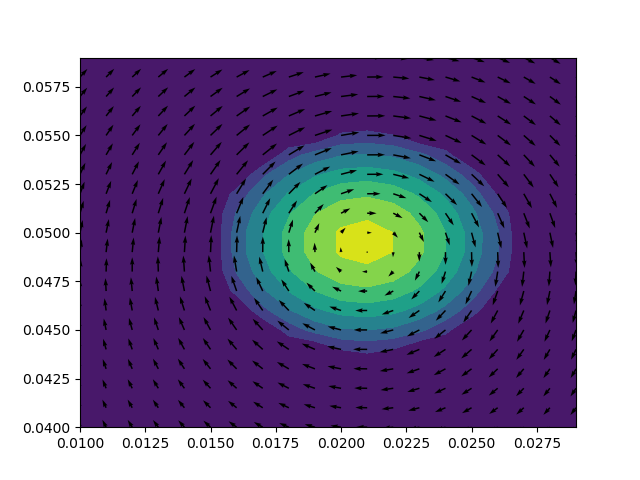
{kind=link}
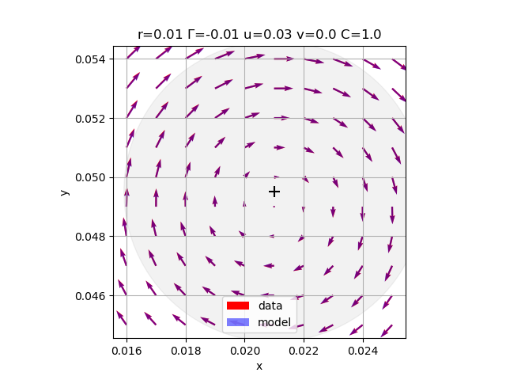
Huge dataset - HDF5 file¶
Experimental datasets from [TOWNE2023] are used to evaluate the capacity of VortexFitting to read huge files,
especially, the turbulent boundary layer and transverse gust experimental results.
For example, the gust experiment dataset provided by [TOWNE2023] is about 11.4 Go.
Detection is performed with a specific timestep (here t = 5): 283 vortices are detected.
Tests are run on a Windows computer, with 64 Go of RAM and 32 available cores.
Parameters are:
swirling and least-square filter methods
a Lamb-Oseen model
a boxsize of 6, a detection threshold of 0.01 and a correlation threshold of 0.5
The effect of parallelization is provided in the following table:
Number of cores |
1 |
2 |
4 |
8 |
16 |
|---|---|---|---|---|---|
Elapsed time |
43.018 |
15.709 |
9.475 |
7.262 |
20.885 |
Gain (%) |
0% |
63.42% |
77.93% |
83.09% |
51.49% |